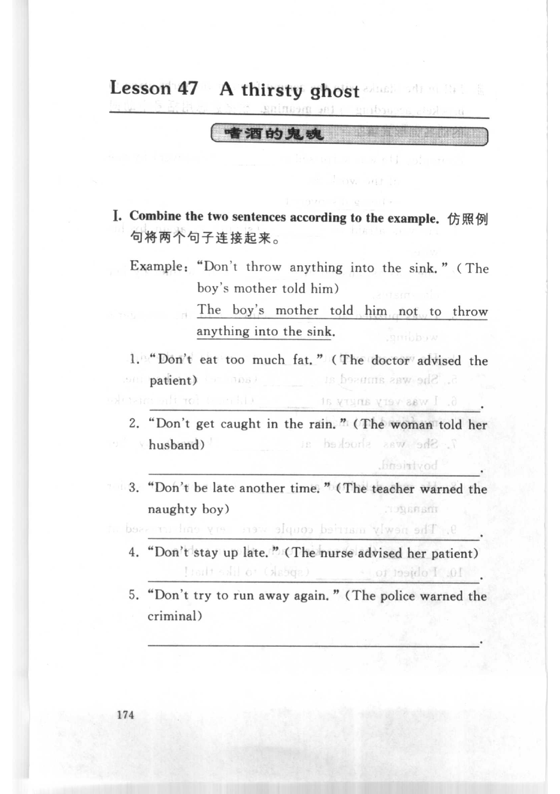
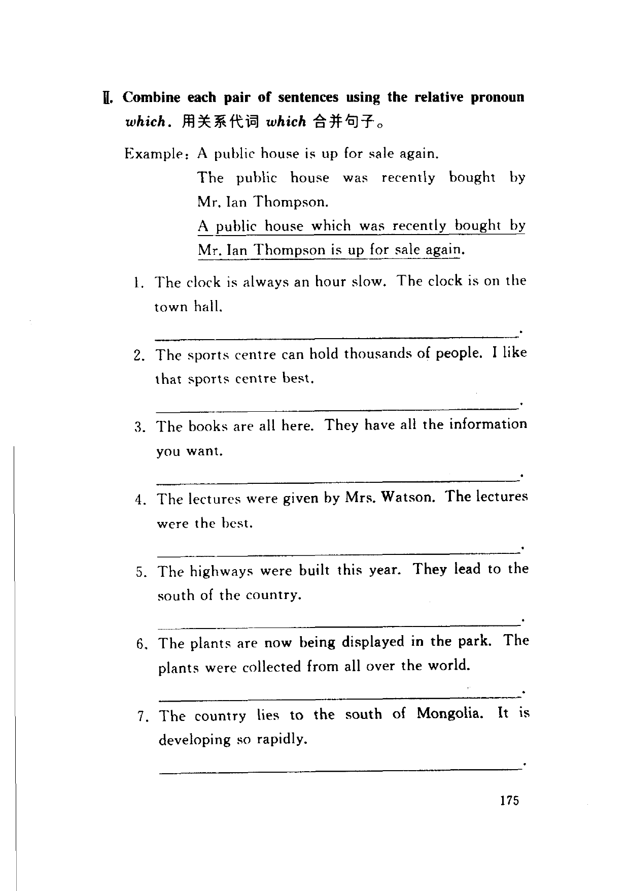
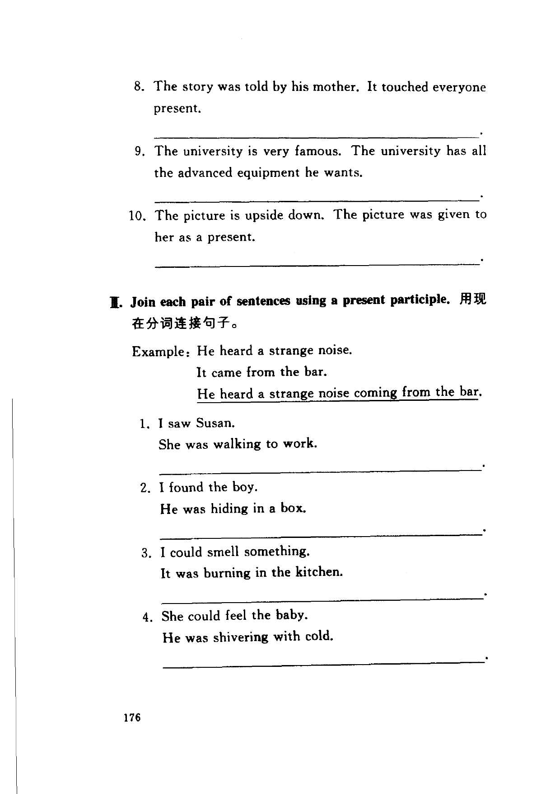
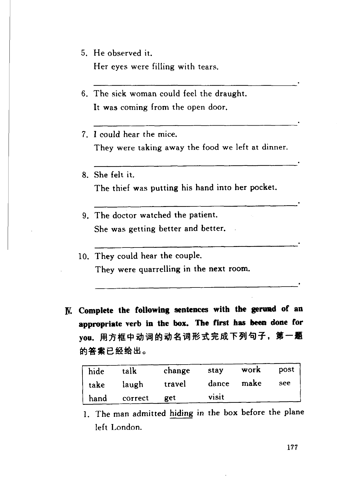
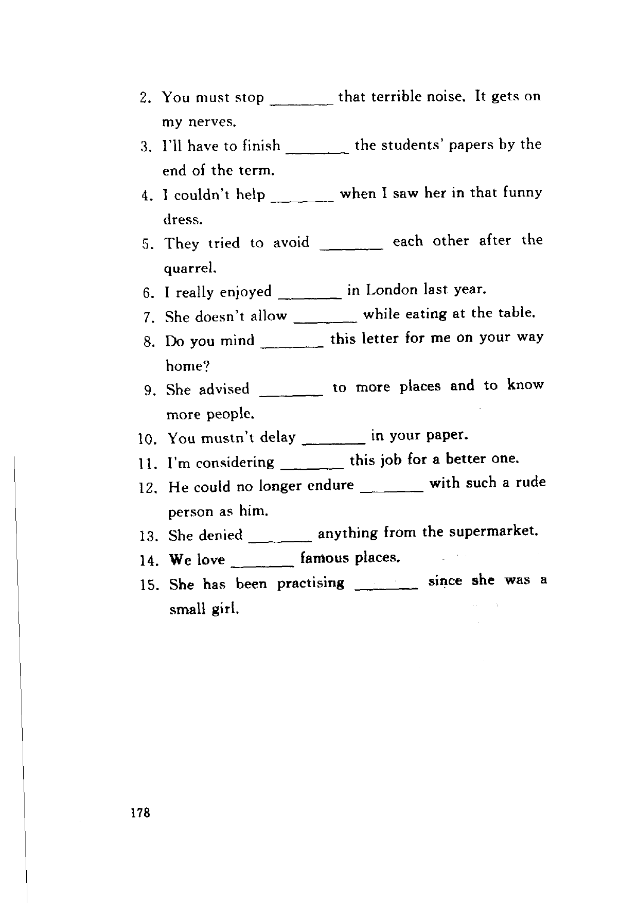

Grammar exercises · 语法练习
I. Combine the two sentences according to the example.
仿照例句将两个句子连接起来。
Example: “Don't throw anything into the sink.” (The boy's mother told him)
The boy's mother told him not to throw anything into the sink.
-
I. Combine sentences — “Don't eat too much fat.” (The doctor advised the patient)
-
I. Combine sentences — “Don't get caught in the rain.” (The woman told her husband)
-
I. Combine sentences — “Don't be late another time.” (The teacher warned the naughty boy)
-
I. Combine sentences — “Don't stay up late.” (The nurse advised her patient)
-
I. Combine sentences — “Don't try to run away again.” (The police warned the criminal)
II. Combine each pair of sentences using the relative pronoun which.
用关系代词 which 合并句子。
Example: A public house is up for sale again.
The public house was recently bought by Mr. Ian Thompson.
A public house which was recently bought by Mr. Ian Thompson is up for sale again.
-
II. which — The clock is always an hour slow. The clock is on the town hall.
-
II. which — The sports centre can hold thousands of people. I like that sports centre best.
-
II. which — The books are all here. They have all the information you want.
-
II. which — The lectures were given by Mrs. Watson. The lectures were the best.
-
II. which — The highways were built this year. They lead to the south of the country.
-
II. which — The plants are now being displayed in the park. The plants were collected from all over the world.
-
II. which — The country lies to the south of Mongolia. It is developing so rapidly.
-
II. which — The story was told by his mother. It touched everyone present.
-
II. which — The university is very famous. The university has all the advanced equipment he wants.
-
II. which — The picture is upside down. The picture was given to her as a present.
III. Join each pair of sentences using a present participle.
用现在分词连接句子。
Example: He heard a strange noise.
It came from the bar.
He heard a strange noise coming from the bar.
-
III. Present participle — I saw Susan. She was walking to work.
-
III. Present participle — I found the boy. He was hiding in a box.
-
III. Present participle — I could smell something. It was burning in the kitchen.
-
III. Present participle — She could feel the baby. He was shivering with cold.
-
III. Present participle — He observed it. Her eyes were filling with tears.
-
III. Present participle — The sick woman could feel the draught. It was coming from the open door.
-
III. Present participle — I could hear the mice. They were taking away the food we left at dinner.
-
III. Present participle — She felt it. The thief was putting his hand into her pocket.
-
III. Present participle — The doctor watched the patient. She was getting better and better.
-
III. Present participle — They could hear the couple. They were quarrelling in the next room.
IV. Complete the following sentences with the gerund of an appropriate verb in the box. The first has been done for you.
用方框中动词的动名词形式完成下列句子，第一题的答案已经给出。
hide talk change stay work posttake laugh travel dance make seehand correct get visit
-
IV. Gerund from box — The man admitted hiding in the box before the plane left London.
-
IV. Gerund from box — You must stop that terrible noise. It gets on my nerves.
-
IV. Gerund from box — I'll have to finish the students' papers by the end of the term.
-
IV. Gerund from box — I couldn't help when I saw her in that funny dress.
-
IV. Gerund from box — They tried to avoid each other after the quarrel.
-
IV. Gerund from box — I really enjoyed in London last year.
-
IV. Gerund from box — She doesn't allow while eating at the table.
-
IV. Gerund from box — Do you mind this letter for me on your way home?
-
IV. Gerund from box — She advised to more places and to know more people.
-
IV. Gerund from box — You mustn't delay in your paper.
-
IV. Gerund from box — I'm considering this job for a better one.
-
IV. Gerund from box — He could no longer endure with such a rude person as him.
-
IV. Gerund from box — She denied anything from the supermarket.
-
IV. Gerund from box — We love famous places.
-
IV. Gerund from box — She has been practising since she was a small girl.
Original images · 原图对照
Expand a page to compare it with the transcription. Open the original in a new tab to zoom in.
展开原图核对文字，也可以在新标签页打开原图放大查看。
Book page 174 · Exercise I (combine sentences, example and items 1–5)
Open original · 打开原图 ↗ Download original · 下载原图


Book page 175 · Exercise II (which, example and items 1–7)
Open original · 打开原图 ↗ Download original · 下载原图


Book page 176 · Exercise II (items 8–10) and Exercise III (present participle, example and items 1–4)
Open original · 打开原图 ↗ Download original · 下载原图


Book page 177 · Exercise III (items 5–10) and Exercise IV (gerund from box, item 1 done)
Open original · 打开原图 ↗ Download original · 下载原图


Book page 178 · Exercise IV (items 2–15)
Open original · 打开原图 ↗ Download original · 下载原图


Your notes and answers
Use this space for longer responses or exercises that do not have an individual answer box.